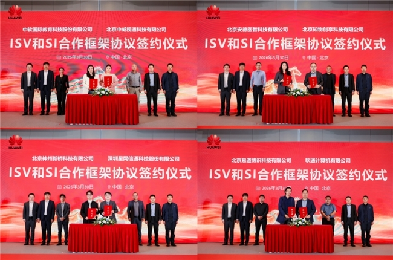
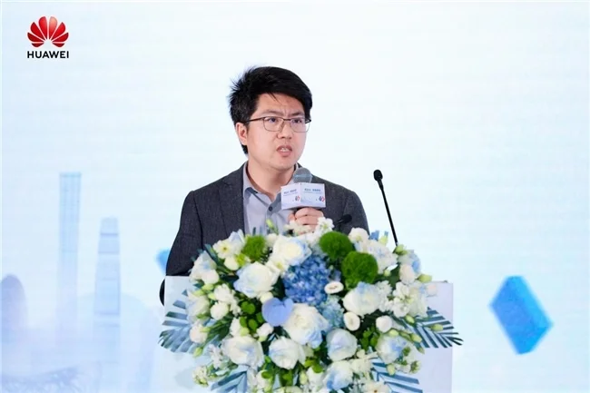

当下计算产业浪潮迭起，AI作为数字经济核心引擎，正全面赋能政企数字化转型、释放新质生产力。3月30日，以"商业AI·数智新程"为主题的北京政企商业市场ISV×SI生态共建活动圆满举办。北京神州新桥科技有限公司作为华为核心生态伙伴受邀出席，与众多行业同仁齐聚，共同展示AI技术落地实践成果，持续深化开放共赢、协同共进的数智生态建设。
活动中，华为中国政企解决方案规划与集成验证部部长朱丹、华为北京政企Marketing与解决方案销售部部长于督分别致辞，阐述了华为在"行业+AI"发展中的支持策略与生态布局。这些战略方向与神州新桥的业务发展高度契合——公司专注于AI大模型与行业需求的链接、赋能与集成，正积极拥抱华为生态带来的广阔机遇。
现场同步举行的ISV和SI合作框架协议签约仪式，标志着华为与生态伙伴合作的进一步深化。神州新桥作为华为长期合作的SI伙伴，将持续依托华为六大区域OpenLab及云上平台，获得从技术支撑到市场拓展的全方位赋能，与华为共同推进企业信息化进程。
华为北京政企昇腾产业技术总监郑杰深入解读了行业AI发展风向，强调华为依托昇腾强大算力与全栈AI解决方案，具备安全可信、高性能、本地化部署的核心优势。这为神州新桥构建安全灵活的AI服务体系提供了坚实的技术底座。

在合作伙伴分享环节，北京神州新桥科技有限公司AI事业部总经理迟宝佳登台，向与会嘉宾系统介绍了公司的核心能力与创新实践。
公司专注于AI大模型与行业需求的链接、赋能与集成，依托AI技术服务与AI应用产品两大中心，构建安全灵活的AI服务体系。在智能办公、数字营销、知识问答等场景，神州新桥已实现创新突破，成功将AI能力转化为可落地的行业解决方案。
作为华为生态的重要参与者，神州新桥充分发挥自身在AI大模型集成与行业场景理解方面的专长，将其与华为昇腾算力及全栈AI解决方案深度融合，为政企客户提供从咨询、部署到运维的一站式AI服务。